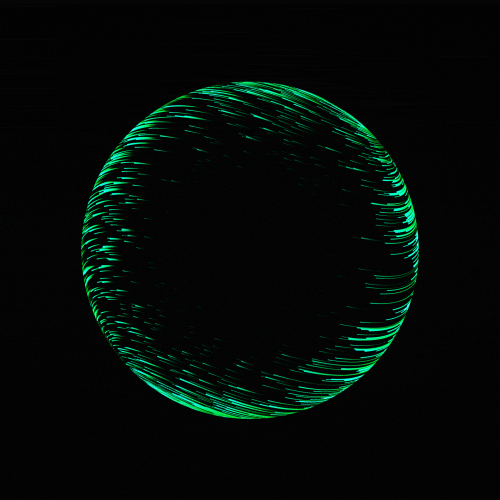
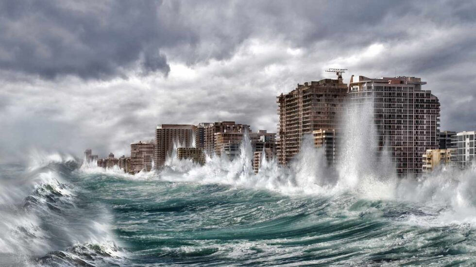

GEOSPATIAL LAB LABORATORIO GEOESPACIAL
"Exploring Ideas, Building Solutions" "Explorando Ideas, Construyendo Soluciones"
🔬 Innovation Playground 🔬 Espacio de Innovación
Welcome to our Geospatial Lab—a space where we experiment with emerging concepts, tools, and methodologies in geospatial science. Here, we share our latest thinking, research directions, and experimental applications that address real-world challenges through spatial innovation. Browse through our collection of ideas, prototypes, and thought experiments that push the boundaries of what's possible with location intelligence.
Bienvenido a nuestro Laboratorio Geoespacial—un espacio donde experimentamos con conceptos, herramientas y metodologías emergentes en ciencia geoespacial. Aquí compartimos nuestro pensamiento más reciente, direcciones de investigación y aplicaciones experimentales que abordan desafíos del mundo real a través de la innovación espacial. Explore nuestra colección de ideas, prototipos y experimentos de pensamiento que amplían los límites de lo posible con la inteligencia de ubicación.
CityTank: Real-time Fuel Price Map for Berlin CityTank: Mapa de Precios de Combustible en Tiempo Real para Berlín
"Never overpay for fuel again" "No vuelvas a pagar de más por el combustible"
CityTank is an interactive geovisor that displays live fuel prices from the Tankerkönig API. It helps drivers in Berlin find the cheapest gas station with color‑coded markers, animated routes, and historical trends. Built with OpenLayers and Chart.js, it's fully open source.
CityTank es un geovisor interactivo que muestra precios de combustible en vivo desde la API de Tankerkönig. Ayuda a los conductores en Berlín a encontrar la gasolinera más barata mediante marcadores de colores, rutas animadas y tendencias históricas. Construido con OpenLayers y Chart.js, es completamente de código abierto.

Recent Ideas & Concepts Ideas y Conceptos Recientes

Enhance Your Maps with Free Weather Layers from MapTiler SDK Mejora tus mapas con capas meteorológicas gratuitas de MapTiler SDK
Add real-time weather to your maps in seconds. Use MapTiler SDK to integrate current conditions and 5-day forecasts — intuitive layers that boost engagement and make your maps smarter.
Añade el tiempo en tiempo real a tus mapas en cuestión de segundos. Utiliza el SDK de MapTiler para integrar las condiciones actuales y las previsiones a 5 días: capas intuitivas que aumentan la participación y hacen que tus mapas sean más inteligentes.

Visualizing Floods: An Intuitive Comparison with Juxtapose JS Visualización de inundaciones: Una comparación intuitiva con Juxtapose JS
A visual look at recent floods in the Dominican Republic’s Duarte region using Sentinel-1 imagery and Juxtapose JS. Explore the before-and-after impact through an interactive comparison.
Una mirada visual a las recientes inundaciones en la región Duarte de la República Dominicana utilizando imágenes de Sentinel-1 y Juxtapose JS. Explora el impacto antes y después a través de una comparación interactiva.

Floods and Tsunamis in 3D with DEM and Open Tools Inundaciones y Tsunamis en 3D con DEM y Herramientas Abiertas
How to implement geospatial tools for flood analysis using satellite data, hydrological models and open source.
Cómo implementar herramientas geoespaciales para el análisis de inundaciones usando datos satelitales, modelos hidrológicos y código abierto.